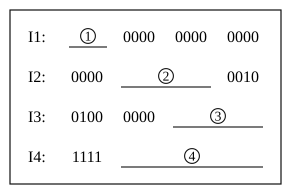

2026-43
指令系统某 16 位计算机 C 按字节编址，通用寄存器 R0～R15 的编号为 0～15，存储器地址为 16 位，采用定长指令字，指令格式有 R、I 和 M 型，如下所示。

其中，op1 为 0001、0010 分别表示加、左移指令，op2 为 0100 表示加立即数指令，op3 为 1110、1111 分别表示取数、存数指令，R[r] 表示寄存器 r 中的内容，num 为移位位数，M[addr] 表示存储器地址 addr 中的内容。请回答下列问题。
（1）主存单元和通用寄存器的宽度各是多少位？（2 分）
（2）op1 和 op2 的编码是否可以相同？op2 和 op3 的编码是否可以相同？（2 分）
（3）若 R[2] = ABCDH，R[9] = F001H，则指令 0000 0010 1001 0001 执行后，R2 和 R9 中内容分别是多少（用十六进制表示）？（2 分）
（4）若变量 x、y 均为 16 位带符号整数，在存储器中依次从低地址向高地址连续存放，x 的地址在 R15 中，实现“y = 16 * x - 5;”的 4 条指令 I1～I4 如题 43 表所示，写出①～④处的内容。（4 分）
题 43 表

（1）主存单元的宽度是 8 位，通用寄存器的宽度是 16 位。
（2）op1 和 op2 的编码可以相同。op2 和 op3 的编码不可以相同。
（3）R2 的内容是 9BCEH，R9 的内容是 F001H。
（4）①处为 1110，②处为 0000 0100，③处为 1111 1011，④处为 0000 0000 0010。
本题讲解：定长 16 位指令的格式分析与编码
题干格式（16 位，自高到低每 4 位一组）：R 型为 0000 | rt | rs/num | op1，功能 R[rt]←R[rt] op1 R[rs] 或 R[rt]←R[rt] op1 num；I 型为 op2 | rt | imm8，功能 R[rt]←R[rt] op2 imm8；M 型为 op3 | offset，功能 R[0]←M[R[15]+offset]、M[R[15]+offset]←R[0]。
第（1）问：主存单元与通用寄存器宽度（2 分）
- 按字节编址 → 主存单元宽度 = 8 位。
- 16 位计算机，通用寄存器存放机器字 → 宽度 = 16 位（R[15] 恰好要作 16 位访存地址的基址，相互印证）。
第（2）问：op1/op2、op2/op3 编码能否相同（2 分）
- op1 与 op2 可以相同：op1 位于 R 型最低 4 位（bits 3~0），op2 位于 I 型最高 4 位（bits 15~12），二者在不同字段；译码时先由最高 4 位区分 R/I/M 型，不同型的字段互不冲突。
- op2 与 op3 不可以相同：两者同占最高 4 位的操作码字段，编码相同则无法区分加立即数与取数/存数。题中 op2=0100 与 op3=1110、1111 恰好互异。
第（3）问：指令 0000 0010 1001 0001（2 分）
高 4 位 0000 → R 型；rt=0010=2，rs/num=1001=9，op1=0001=加，即 R2←R2+R9。
| 步骤 | 计算 | 结果 |
|---|---|---|
| 相加 | ABCDH + F001H | 1 9BCEH |
| 截取低 16 位 | 进位 1 丢弃 | R2 = 9BCEH |
R9 只作源操作数，R9 = F001H 不变。
第（4）问：实现 y = 16*x − 5 的 4 条指令（4 分）
x、y 为 16 位整数，从低地址向高地址连续存放：x 占 M[R15]，y 占 M[R15+2]。
- I1：R0←M[R15+0]，取 x：M 型取数 op3=1110、offset=0 → ① = 1110。
- I2：R0←R0 左移 4 位（乘 16）：R 型
0000 | rt=0000 | num=0100 | op1=0010→ ② = 0000 0100。 - I3：R0←R0+(−5)：I 型 op2=0100、rt=0000、imm8=−5 的 8 位补码 → ③ = 1111 1011。
- I4：M[R15+2]←R0，存 y：M 型存数 op3=1111、offset=2 → ④ = 0000 0000 0010。
易错点
- 第（3）问忘记截断进位：16 位机器的结果是 9BCEH，不是 19BCEH。
- 第（4）问把 y 的偏移写成 1：按字节编址、16 位变量占 2 字节，y 在 R15+2 处。
- ③ 的编码忘了符号：−5 的 8 位补码是 1111 1011（由 +5=0000 0101 取反加一得到）。
- 第（2）问想当然：字段位置不同就能同码，同占一个操作码字段就必须互异。
答案：①1110；②0000 0100；③1111 1011；④0000 0000 0010；R2=9BCEH，R9=F001H。